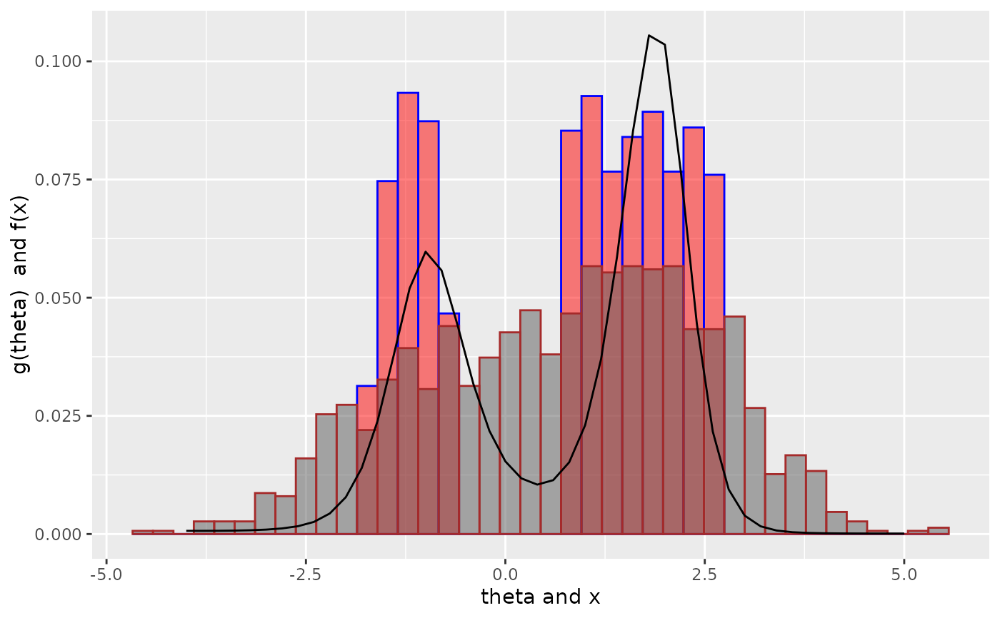

A function to compute Empirical Bayes estimates using deconvolution
Usage
deconv(
tau,
X,
y,
Q,
P,
n = 40,
family = c("Poisson", "Normal", "Binomial"),
ignoreZero = TRUE,
deltaAt = NULL,
c0 = 1,
scale = TRUE,
pDegree = 5,
aStart = 1,
...
)Arguments
- tau
a vector of (implicitly m) discrete support points for \(\theta\). For the Poisson and normal families, \(\theta\) is the mean parameter and for the binomial, it is the probability of success.
- X
the vector of sample values: a vector of counts for Poisson, a vector of z-scores for Normal, a 2-d matrix with rows consisting of pairs, (trial size \(n_i\), number of successes \(X_i\)) for Binomial. See details below
- y
the multinomial counts. See details below
- Q
the Q matrix, implies y and P are supplied as well; see details below
- P
the P matrix, implies Q and y are supplied as well; see details below
- n
the number of support points for X. Applies only to Poisson and Normal. In the former, implies that support of X is 1 to n or 0 to n-1 depending on the
ignoreZeroparameter below. In the latter, the range of X is divided into n bins to construct the multinomial sufficient statistic y (\(y_k\) = number of X in bin K) described in the references below- family
the exponential family, one of
c("Poisson", "Normal", "Binomial")with"Poisson", the default- ignoreZero
if the zero values should be ignored (default =
TRUE). Applies to Poisson only and has the effect of adjustingPfor the truncation at zero- deltaAt
the theta value where a delta function is desired (default
NULL). This applies to the Normal case only and even then only if it is non-null.- c0
the regularization parameter (default 1)
- scale
if the Q matrix should be scaled so that the spline basis has mean 0 and columns sum of squares to be one, (default
TRUE)- pDegree
the degree of the splines to use (default 5). In notation used in the references below, \(p\) = pDegree + 1
- aStart
the starting values for the non-linear optimization, default is a vector of 1s
- ...
further args to function
nlm
Value
a list of 9 items consisting of
- mle
the maximum likelihood estimate \(\hat{\alpha}\)
- Q
the m by p matrix Q
- P
the n by m matrix P
- S
the ratio of artificial to genuine information per the reference below, where it was referred to as \(R(\alpha)\)
- cov
the covariance matrix for the mle
- cov.g
the covariance matrix for the \(g\)
- stats
an m by 6 or 7 matrix containing columns for \(\theta\), \(g\), \(\tilde{g}\) which is \(g\) with thinning correction applied and named
tg, std. error of \(g\), \(G\) (the cdf of \(g\)), std. error of \(G\), and the bias of \(g\)- loglik
the negative log-likelihood function for the data taking a \(p\)-vector argument
- statsFunction
a function to compute the statistics returned above
Details
The data X is always required with two exceptions. In the Poisson case,
y alone may be specified and X omitted, in which case the sample space of
the observations \(X\) is assumed to be 1, 2, .., length(y). The second exception is
for experimentation with other exponential families besides the three implemented here:
y, P and Q can be specified together.
Note also that in the Poisson case where there is zero truncation,
the stats matrix has an additional column "tg" which
accounts for the thinning correction induced by the truncation. See
vignette for details.
References
Bradley Efron. Empirical Bayes Deconvolution Estimates. Biometrika 103(1), 1-20, ISSN 0006-3444. doi:10.1093/biomet/asv068. http://biomet.oxfordjournals.org/content/103/1/1.full.pdf+html
Bradley Efron and Trevor Hastie. Computer Age Statistical Inference. Cambridge University Press. ISBN 978-1-1-7-14989-2. Chapter 21.
Examples
set.seed(238923) ## for reproducibility
N <- 1000
theta <- rchisq(N, df = 10)
X <- rpois(n = N, lambda = theta)
tau <- seq(1, 32)
result <- deconv(tau = tau, X = X, ignoreZero = FALSE)
print(result$stats)
#> theta g SE.g G SE.G Bias.g
#> [1,] 1 0.0051481615 0.0016525341 0.005148161 1.652534e-03 8.541487e-04
#> [2,] 2 0.0098958954 0.0023381444 0.015044057 3.986483e-03 1.099087e-03
#> [3,] 3 0.0185198134 0.0029466370 0.033563870 6.895555e-03 1.102607e-03
#> [4,] 4 0.0328530174 0.0032249075 0.066416888 9.873512e-03 4.812427e-04
#> [5,] 5 0.0537835715 0.0036693678 0.120200459 1.224156e-02 -1.090720e-03
#> [6,] 6 0.0791112606 0.0056206577 0.199311720 1.425433e-02 -3.316963e-03
#> [7,] 7 0.1017934505 0.0077509950 0.301105170 1.743623e-02 -4.781816e-03
#> [8,] 8 0.1121459629 0.0073194510 0.413251133 2.110274e-02 -3.712078e-03
#> [9,] 9 0.1076955317 0.0051046274 0.520946665 2.259374e-02 -5.759912e-04
#> [10,] 10 0.0934081064 0.0049730965 0.614354771 2.125191e-02 2.609017e-03
#> [11,] 11 0.0758233573 0.0063169145 0.690178128 1.862765e-02 4.426107e-03
#> [12,] 12 0.0596913949 0.0066510289 0.749869523 1.672495e-02 4.632921e-03
#> [13,] 13 0.0472247251 0.0058223171 0.797094249 1.624772e-02 3.649927e-03
#> [14,] 14 0.0388249870 0.0043740118 0.835919236 1.627164e-02 1.933483e-03
#> [15,] 15 0.0332241328 0.0031665912 0.869143368 1.566917e-02 -3.121847e-05
#> [16,] 16 0.0289251034 0.0030459927 0.898068472 1.404924e-02 -1.798007e-03
#> [17,] 17 0.0250253380 0.0036190550 0.923093810 1.171550e-02 -3.024715e-03
#> [18,] 18 0.0210171384 0.0039132116 0.944110948 9.419157e-03 -3.448033e-03
#> [19,] 19 0.0167363462 0.0035333178 0.960847294 7.853539e-03 -2.991447e-03
#> [20,] 20 0.0123508104 0.0026193414 0.973198105 6.965651e-03 -1.879392e-03
#> [21,] 21 0.0084417110 0.0017508155 0.981639816 6.220128e-03 -6.879592e-04
#> [22,] 22 0.0054981488 0.0012927504 0.987137965 5.413467e-03 1.279342e-04
#> [23,] 23 0.0035175978 0.0010712165 0.990655562 4.617829e-03 5.320583e-04
#> [24,] 24 0.0022788319 0.0008958692 0.992934394 3.919108e-03 6.645066e-04
#> [25,] 25 0.0015410174 0.0007350941 0.994475412 3.340415e-03 6.679252e-04
#> [26,] 26 0.0011212384 0.0006048170 0.995596650 2.858930e-03 6.345106e-04
#> [27,] 27 0.0008930759 0.0005149033 0.996489726 2.434629e-03 6.091289e-04
#> [28,] 28 0.0007695787 0.0004644742 0.997259305 2.029782e-03 6.030704e-04
#> [29,] 29 0.0007062477 0.0004516035 0.997965553 1.611586e-03 6.169472e-04
#> [30,] 30 0.0006794627 0.0004755882 0.998645015 1.150613e-03 6.487035e-04
#> [31,] 31 0.0006745962 0.0005341491 0.999319611 6.204563e-04 6.948837e-04
#> [32,] 32 0.0006803885 0.0006204563 1.000000000 1.421811e-10 7.501296e-04
##
## Twin Towers Example
## See Brad Efron: Bayes, Oracle Bayes and Empirical Bayes
## disjointTheta is provided by deconvolveR package
theta <- disjointTheta; N <- length(disjointTheta)
z <- rnorm(n = N, mean = disjointTheta)
tau <- seq(from = -4, to = 5, by = 0.2)
result <- deconv(tau = tau, X = z, family = "Normal", pDegree = 6)
g <- result$stats[, "g"]
if (require("ggplot2")) {
ggplot() +
geom_histogram(mapping = aes(x = disjointTheta, y = ..count.. / sum(..count..) ),
color = "blue", fill = "red", bins = 40, alpha = 0.5) +
geom_histogram(mapping = aes(x = z, y = ..count.. / sum(..count..) ),
color = "brown", bins = 40, alpha = 0.5) +
geom_line(mapping = aes(x = tau, y = g), color = "black") +
labs(x = paste(expression(theta), "and x"), y = paste(expression(g(theta)), " and f(x)"))
}
#> Loading required package: ggplot2
#> Warning: The dot-dot notation (`..count..`) was deprecated in ggplot2 3.4.0.
#> ℹ Please use `after_stat(count)` instead.
